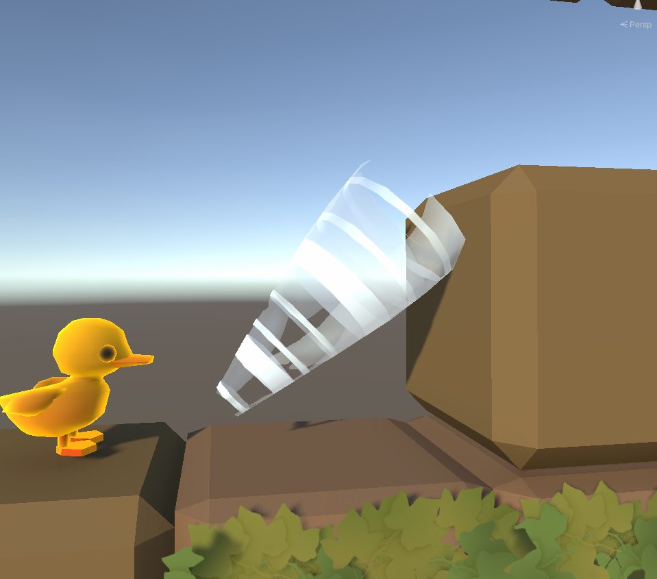

During the course of the project I worked on many features, some from scratch and some that I had to jump into later either because of imidiate bugs that I could fix or because the person who started it was sick. Therefore i will quickly present some of the more major features I worked on.
One of the first features i worked on was the "stairs" that later became a sort of whirlwind that visually shoots the ducklings up onto blocks.
In the end it worked by disabling the gravity and movment affecting the duckling then taking the position of the oposit end of the stairs plus some Y and X axis ofset so it would land on the block, and adding to the ducklings position until it reached that top of the stairs, at which point the gravity and movment would be turned on again. There are more parts of the stairs but not enough wordls so let's move on to the next feature i made.
The actual first feature i made was the command handler. Which worked together
with other systems made by Zakk and Tindra and me later on place tools and
commands into the levels. It's a simple static class with some static functions which
did two things. The first function is SwitchTool(GameTools tool, bool allowed).
It takes a GameTools enum which dictates what tool the active one should be and also
an allowed
bool that tells the script if it is allowd to place tools or not (connected to if the player has
used all possible moves or not).
The second function is
HandleInput(Cell cellType, bool allowed).
It takes a Cell enum which tells the command handler which
cell or part of the game is pressed, then it calculates if the command selected
(which is saved in a static and global current tool variable)
can be used or placed at the selected cell. and if so it alters the Cell passed in
to have the command or object be addded or swapped there. The HandleInput
functions also sends information to a script that keeps track of moves made to see if
a limit is reached or not.
Last feature I will tell you about is the pipe system. The pipe system wasn't made by me but the person fixing some major game breaking bugs in it was sick. So it fell on my table to fix. The pipe systems feature was to work as a teleporter between pipes. At first there was light.